SD ・ 命題大綱 U1-3 ・ 影片講義
單自由度、多自由度系統之動態分析及應用
影片 14:54 ・ 14 章 ・ 30 段 ・ 例題①–⑤
MDOF 不是新問題，它是 N 個 SDOF 疊在一起。
建立矩陣 → 拆成 SDOF → 查譜計算 → 裝回去組合 ｜ 歷屆 65 題，都是同一個劇情
0底層邏輯 一件事
MDOF 是 N 個 SDOF 疊在一起：拆成 N 個單擺 → 各自查譜 → 裝回去影片 0:26
這個單元是全科最大的單元，主分類加副分類，歷屆一共 65 題。但它們都在重複同一個物理劇情。
多自由度系統不是新問題，它只是 N 個單自由度系統疊在一起。整個單元只做一件事：把牽扯在一起的 N 條方程式，拆成 N 個互不相干的單擺，各自查譜，再裝回去。
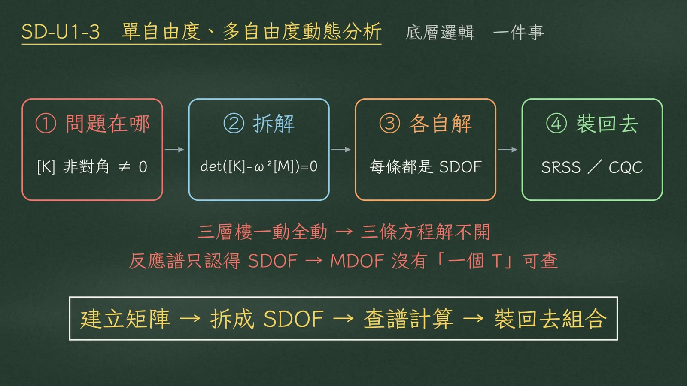
為什麼一定要拆：①問題在哪 ②拆解 ③各自解 ④裝回去影片 0:53
為什麼一定要拆？
| 原因 | 說明 |
|---|
| ① 耦合 | 物理座標下，勁度矩陣的非對角項不是零，三層樓一動全動，三條方程式解不開。 |
| ② 反應譜 | 反應譜只認得單自由度，多自由度沒有單一的週期，查不到表。 |
建立矩陣 → 拆成單自由度 → 查譜計算 → 裝回去組合
所以解題永遠是這四個步驟。
1SDOF 的三個劇本
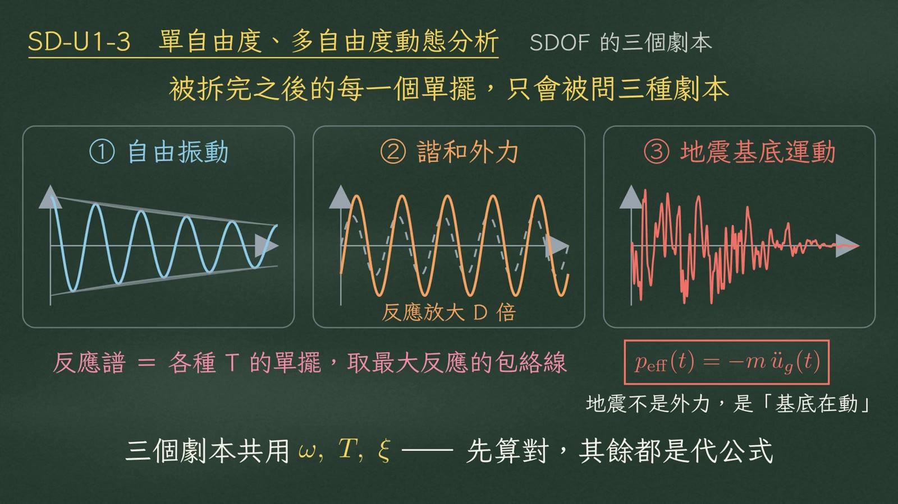
自由振動、諧和外力、地震基底運動；地震的等效外力 \(p_{\rm eff}=-m\ddot u_g\)影片 1:42
先看被拆完之後的每一個單擺。單自由度只會被問三種劇本：
| 劇本 | 內容 |
|---|
| ① 自由振動 | 給初始擾動後放手，每過一圈振幅掉多少，就是阻尼比。 |
| ② 諧和外力 | 轉動機械、風渦脫落，反應被放大 \(D\) 倍。 |
| ③ 地震基底運動 | 地震不是外力，是基底在動。 |
$$p_{\rm eff}(t)=-m\,\ddot u_g(t)$$
反應譜，就是把各種週期的單擺都搖一次，取最大反應畫成的包絡線。
重點三個劇本共用同一組結構參數：\(\omega\)、週期 \(T\)、阻尼比 \(\xi\)。先把這三個數算對，其餘都只是代公式。
2例題一 水塔
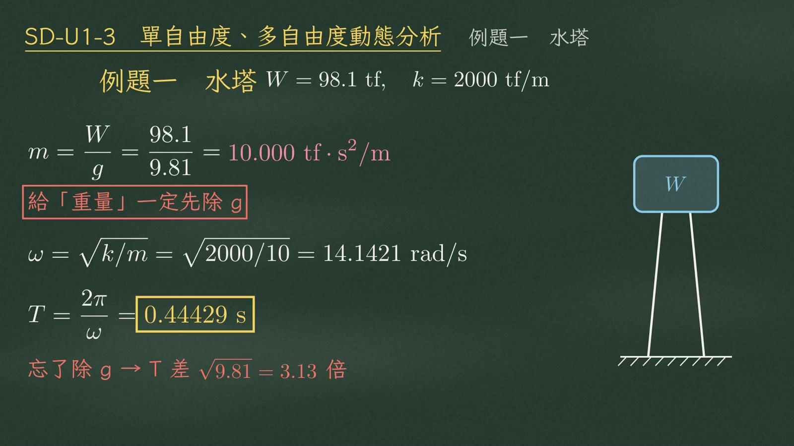
W = 98.1 tf、k = 2000 tf/m：先除 g 求質量影片 2:13
水塔頂部集中重量 98.1 tf，側向勁度 2000 tf/m。
$$m=\frac{W}{g}=\frac{98.1}{9.81}=10\ \text{tf}\cdot\text{s}^2/\text{m}$$
$$\omega=\sqrt{\frac{2000}{10}}=14.1421\ \text{rad/s},\qquad T=\frac{2\pi}{\omega}=0.44429\ \text{s}$$
第一個陷阱題目給的是重量，一定先除以 \(g\)。忘了除 \(g\)，週期會差 \(\sqrt{9.81}=3.13\) 倍。
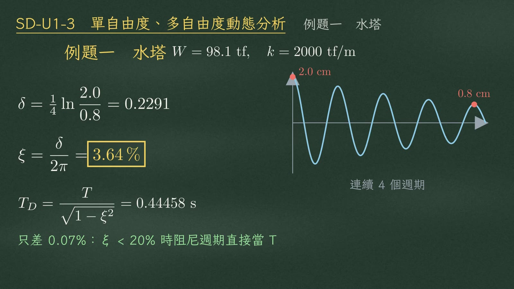
連續 4 個週期，振幅 2.0 → 0.8 cm影片 2:41
自由振動試驗：連續四個週期後，振幅由 2 cm 衰減到 0.8 cm。
$$\delta=\frac14\ln\frac{2.0}{0.8}=0.2291,\qquad \xi=\frac{\delta}{2\pi}=3.64\%,\qquad T_D=\frac{T}{\sqrt{1-\xi^2}}=0.44458\ \text{s}$$
不用算阻尼週期只差萬分之七（0.07%），阻尼比小於兩成時直接忽略，阻尼週期直接當 \(T\)。
3放大係數 r 與 ξ
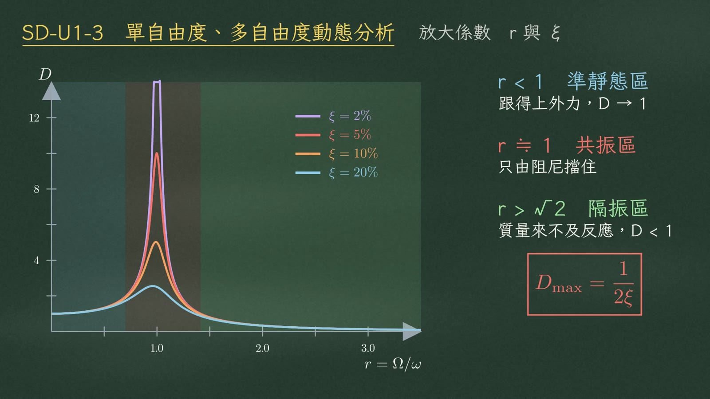
D–r 曲線（ξ = 2、5、10、20%）與三個區域影片 3:09
諧和外力的放大係數 \(D\) 只看兩個數：頻率比 \(r=\Omega/\omega\)（外力頻率除以自己的 \(\omega\)），以及阻尼比 \(\xi\)。
| 頻率比 | 區域 | 行為 |
|---|
| \(r<1\) | 準靜態區 | 結構跟得上，\(D\to1\) |
| \(r\approx1\) | 共振區 | 能量每圈累積，\(D\) 只由阻尼擋住，\(D_{\max}=\dfrac{1}{2\xi}\) |
| \(r>\sqrt2\) | 隔振區 | \(D<1\) |
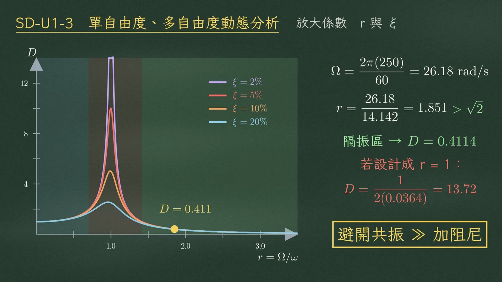
250 rpm 機械：r = 1.851 落在隔振區影片 3:37
回到水塔：頂部要裝每分鐘 250 轉的機械。
$$\Omega=\frac{2\pi(250)}{60}=26.18\ \text{rad/s},\qquad r=\frac{26.18}{14.142}=1.851>\sqrt2\ \Rightarrow\ D=0.411$$
落在隔振區，反應被壓小。如果不小心設計成 \(r=1\)，同一台機器會放大
$$D=\frac{1}{2(0.0364)}=13.72\ \text{倍}$$
重點阻尼是共振時唯一的煞車，但避開共振比加阻尼有效得多。
4步驟一 建立 [K]
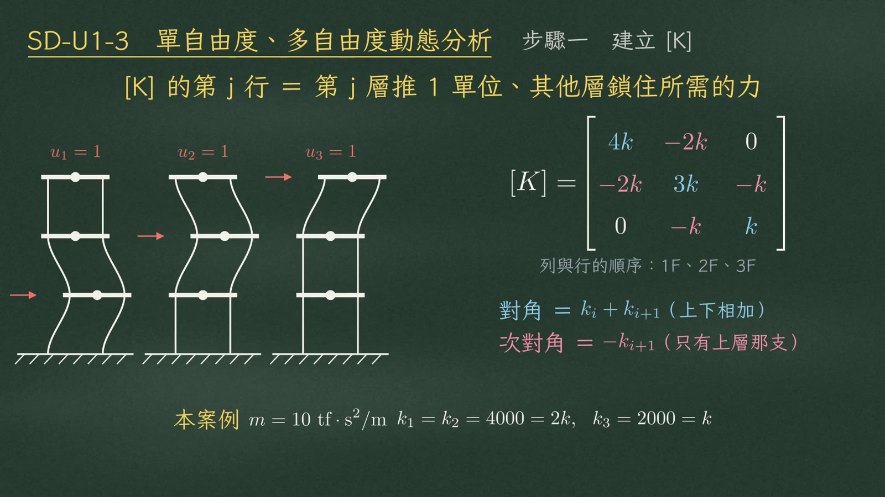
第 j 層推 1 單位、其他層鎖住 → [K] 第 j 行；對角藍、次對角粉影片 4:11
勁度矩陣的每一行，就是某一層推一單位、其他層鎖住，各層需要施加的力。剪力屋架一定是三對角：
| 位置 | 規則 |
|---|
| 對角項 | \(k_i+k_{i+1}\)：上下兩層彈簧相加（頂層只有一支彈簧） |
| 次對角項 | \(-k_{i+1}\)：負的上層彈簧 |
本案例三層屋架，每層質量 \(m=10\)，層間勁度由下而上 4000、4000、2000，令 \(k=2000\)：
$$[K]=\begin{bmatrix}\color{#3d7fae}{4k}&\color{#c4527c}{-2k}&0\\ \color{#c4527c}{-2k}&\color{#3d7fae}{3k}&\color{#c4527c}{-k}\\ 0&\color{#c4527c}{-k}&\color{#3d7fae}{k}\end{bmatrix}\qquad(\text{列與行順序：1F、2F、3F})$$
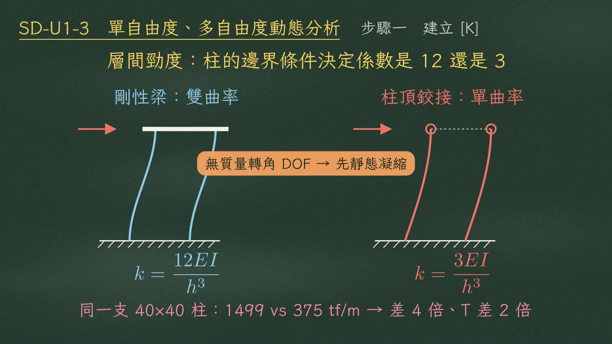
剛性梁雙曲率 12EI/h³ vs 柱頂鉸接單曲率 3EI/h³影片 4:39
層間勁度從哪裡來？看柱的邊界條件：
| 柱頂條件 | 變形 | 層間勁度 |
|---|
| 剛性梁 | 雙曲率 | \(k=\dfrac{12EI}{h^3}\) |
| 柱頂鉸接 | 單曲率 | \(k=\dfrac{3EI}{h^3}\) |
同一支 40×40 的柱（黑板：1499 vs 375 tf/m），勁度差整整 4 倍，週期差 2 倍。
重點沒有質量的轉角自由度，要先用靜態凝縮消掉，不要拿去解特徵值。
5振態是什麼
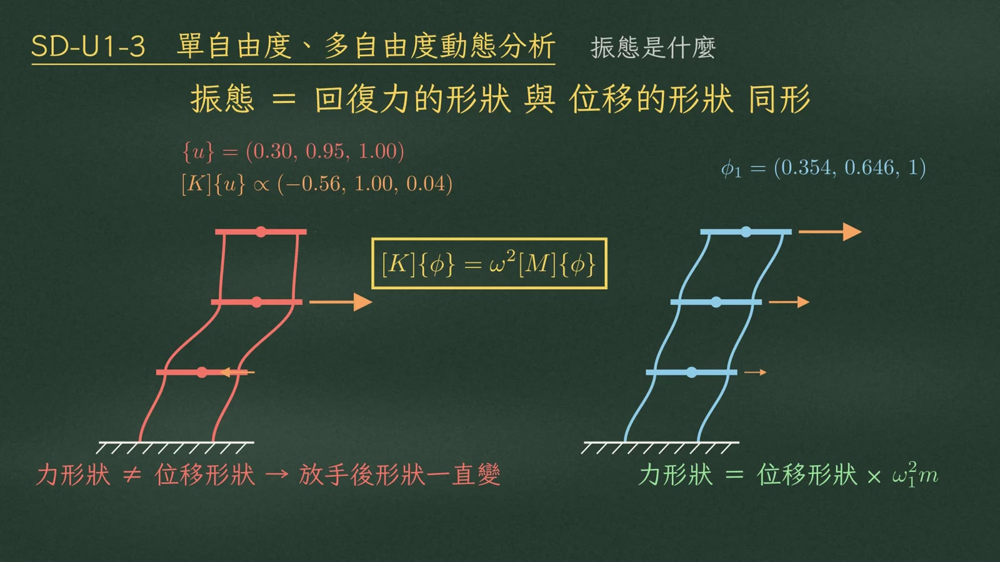
左：任意變形，力形狀 ≠ 位移形狀；右：φ₁，力形狀 = 位移形狀 × ω₁²m影片 5:09
步驟二之前，先問：振態到底是什麼？隨便給一個變形（黑板：\(\{u\}=(0.30,0.95,1.00)\)），用勁度矩陣算出來的回復力 \([K]\{u\}\propto(-0.56,1.00,0.04)\)，形狀跟位移不一樣，放手後形狀會一直改變。
只有幾個特殊的變形（例如 \(\phi_1=(0.354,0.646,1)\)），回復力的形狀剛好等於位移形狀乘 \(\omega^2 m\)：
$$[K]\{\phi\}=\omega^2[M]\{\phi\}$$
放手後形狀固定，只有振幅隨時間變，這就是單擺。這就是可以拆成單自由度的物理根據。
6例題二 手算特徵值
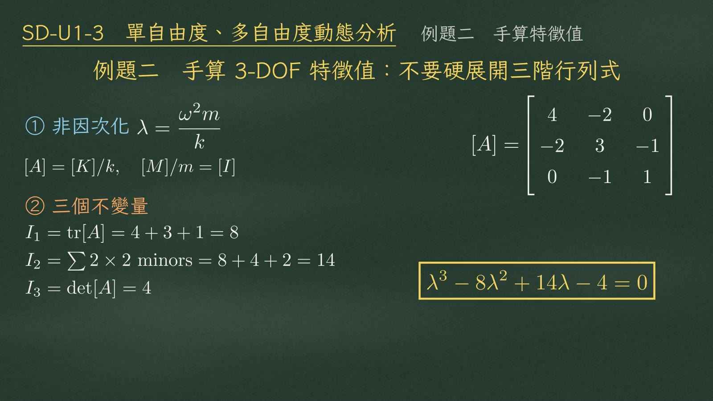
① 非因次化 ② 三個不變量直接寫出三次式影片 5:43
手算三自由度的特徵值，不要硬展開三階行列式。
① 非因次化：令 \(\lambda=\dfrac{\omega^2 m}{k}\)，矩陣就變成小整數：
$$[A]=\frac{[K]}{k}=\begin{bmatrix}4&-2&0\\-2&3&-1\\0&-1&1\end{bmatrix},\qquad \frac{[M]}{m}=[I]$$
② 三個不變量直接寫出三次式：
| 不變量 | 計算 |
|---|
| \(I_1=\text{tr}[A]\) | \(4+3+1=8\) |
| \(I_2=\sum 2\times2\) 主子式 | \(8+4+2=14\) |
| \(I_3=\det[A]\) | \(4\) |
$$\lambda^3-8\lambda^2+14\lambda-4=0$$
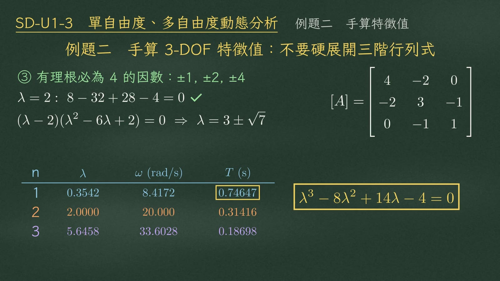
③ 有理根試 λ = 2；三組 λ、ω、T影片 6:14
③ 試有理根：有理根一定是常數項 4 的因數（±1、±2、±4）。試 \(\lambda=2\)：\(8-32+28-4=0\) ✓
$$(\lambda-2)(\lambda^2-6\lambda+2)=0\ \Rightarrow\ \lambda=3\pm\sqrt7$$
| n | \(\lambda\) | \(\omega\) (rad/s) | \(T\) (s) |
|---|
| 1 | 0.3542 | 8.4172 | 0.74647 |
| 2 | 2.0000 | 20.000 | 0.31416 |
| 3 | 5.6458 | 33.6028 | 0.18698 |
7三個振態與正交性
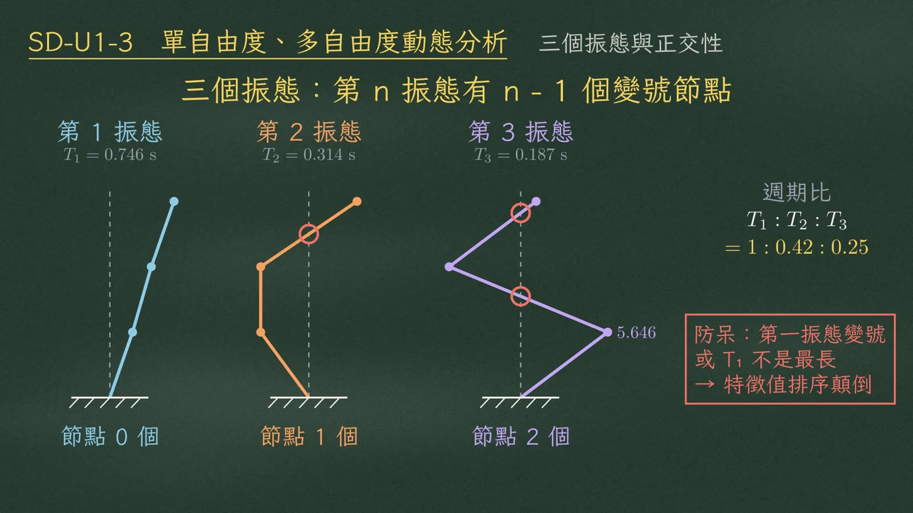
第 n 振態有 n − 1 個變號節點（紅圈）；T₁ : T₂ : T₃ = 1 : 0.42 : 0.25影片 6:42
畫出三個振態，頂層正規化為 1：
| 振態 | 形狀 | 節點數 |
|---|
| 第 1 振態 | 全同號，整棟同向搖 | 0 |
| 第 2 振態 | 變號一次 | 1 |
| 第 3 振態 | 變號兩次，頂層和底層反向，底層幅值 5.646 | 2 |
檢查規則：第 n 振態有 n − 1 個變號節點。算完先數節點——如果第一振態出現變號，或 \(T_1\) 不是最長的，代表特徵值排序顛倒了。
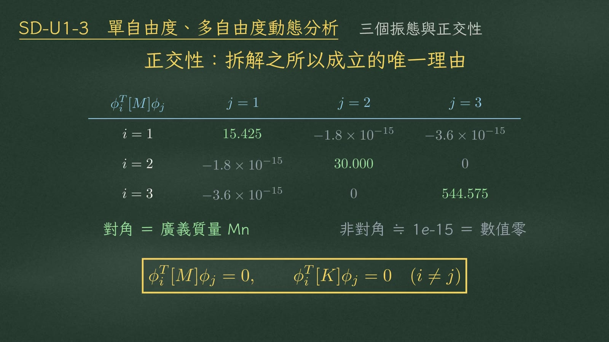
\(\phi_i^T[M]\phi_j\)：對角＝廣義質量，非對角 ≈ 10⁻¹⁵ ＝ 數值零影片 7:09
正交性，是拆解成立的唯一理由。實際算 \(\phi_i^T[M]\phi_j\)：
| \(\phi_i^T[M]\phi_j\) | j = 1 | j = 2 | j = 3 |
|---|
| i = 1 | 15.425 | −1.8×10⁻¹⁵ | −3.6×10⁻¹⁵ |
| i = 2 | −1.8×10⁻¹⁵ | 30.000 | 0 |
| i = 3 | −3.6×10⁻¹⁵ | 0 | 544.575 |
對角線是廣義質量；非對角全部是 10⁻¹⁵ 等級，也就是零。而且振態對質量矩陣和勁度矩陣同時正交，所以座標一換，兩個矩陣同時對角化：
$$\phi_i^T[M]\phi_j=0,\qquad \phi_i^T[K]\phi_j=0\qquad(i\neq j)$$
8步驟二 解耦
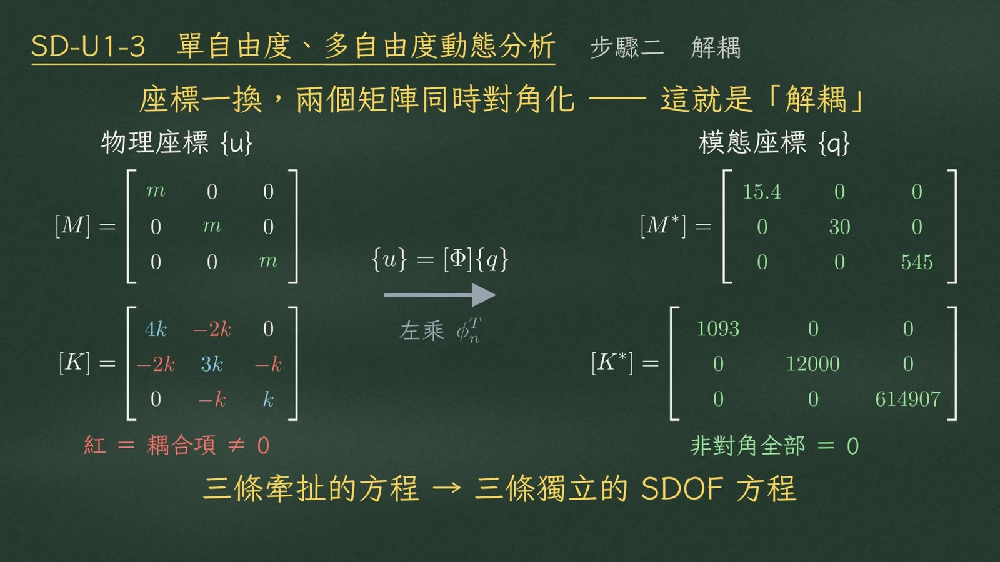
物理座標 [K] 的紅色耦合項 ≠ 0 → 模態座標 [M*]、[K*] 非對角全部 = 0影片 7:34
令物理位移 \(\{u\}=[\Phi]\{q\}\)（振態矩陣乘模態座標），代回運動方程式，左乘 \(\phi_n^T\)。物理座標下，勁度矩陣的紅色耦合項不是零；模態座標下，質量和勁度矩陣的非對角全部變成零：
$$[M^*]=\text{diag}(15.4,\ 30,\ 545),\qquad [K^*]=\text{diag}(1093,\ 12000,\ 614907)$$
三條牽扯的方程，變成三條獨立的單自由度方程。
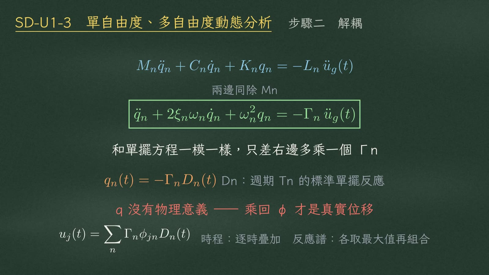
第 n 條方程同除 Mₙ，與單擺方程只差右邊的 Γₙ影片 8:01
$$M_n\ddot q_n+C_n\dot q_n+K_nq_n=-L_n\ddot u_g(t)$$
第 n 條方程同除廣義質量 \(M_n\)：
$$\ddot q_n+2\xi_n\omega_n\dot q_n+\omega_n^2q_n=-\Gamma_n\,\ddot u_g(t)$$
和單擺方程一模一樣，只差右邊多乘一個參與因子 \(\Gamma_n\)。所以
$$q_n(t)=-\Gamma_nD_n(t),\qquad u_j(t)=\sum_n\Gamma_n\phi_{jn}D_n(t)$$
\(D_n\) 就是週期 \(T_n\) 的標準單擺反應。
注意\(q\) 沒有物理意義，乘回 \(\phi\) 才是真實位移。時程分析逐時疊加；反應譜法則各取最大值，再組合。
9例題三 Γ 與有效質量
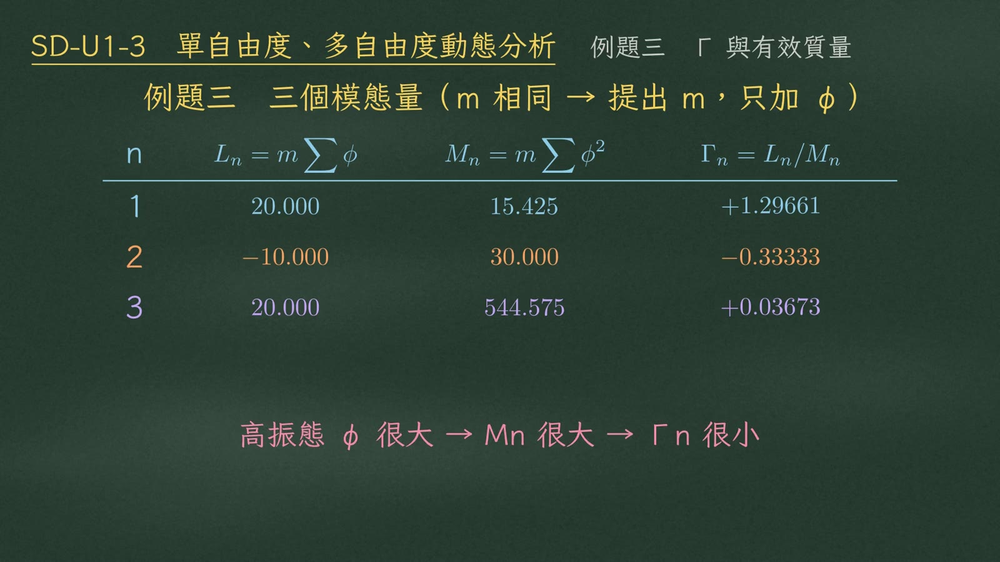
m 相同 → 提出 m，只加 φ影片 8:35
\(L_n=\phi_n^T[M]\{1\}\)；質量都相同，就是 \(m\sum\phi\)。\(M_n\) 是 \(m\sum\phi^2\)。參與因子 \(\Gamma_n=L_n/M_n\)：
| n | \(L_n=m\sum\phi\) | \(M_n=m\sum\phi^2\) | \(\Gamma_n=L_n/M_n\) |
|---|
| 1 | 20.000 | 15.425 | +1.2966 |
| 2 | −10.000 | 30.000 | −0.3333 |
| 3 | 20.000 | 544.575 | +0.0367 |
重點高振態 \(\phi\) 很大 → \(M_n\) 很大 → \(\Gamma_n\) 就很小。
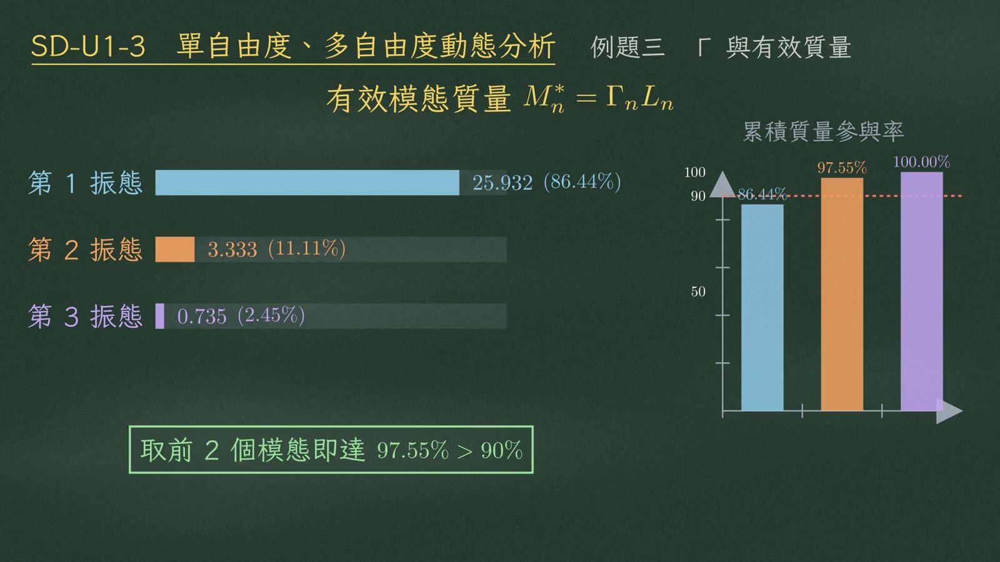
有效模態質量與累積參與率，90% 紅虛線影片 9:00
$$M_n^*=\Gamma_nL_n$$
| n | \(M_n^*\) | 占總質量 | 累積 |
|---|
| 1 | 25.932 | 86.44% | 86.44% |
| 2 | 3.333 | 11.11% | 97.55% |
| 3 | 0.735 | 2.45% | 100% |
前兩個模態累積已達 97.55%，超過規範要求的九成。這就是取幾個模態才夠的量化依據。
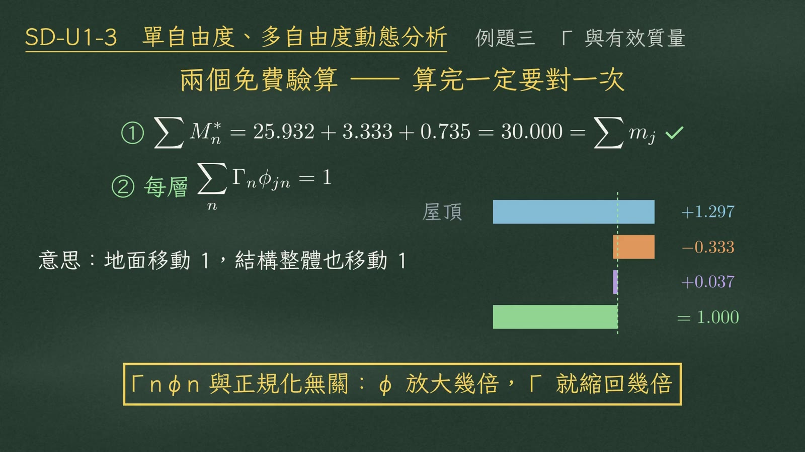
① ΣMₙ* = Σm ② 每層 ΣΓₙφⱼₙ = 1（屋頂瀑布條）影片 9:31
兩個免費驗算——算完一定做
① 有效質量加總必須等於總質量：\(\sum M_n^*=25.932+3.333+0.735=30.000=\sum m_j\) ✓
② 每一層的 \(\Gamma\phi\) 加總必須等於 1：屋頂 \(1.297-0.333+0.037=1.000\)。意思是：地面移動 1，結構整體也移動 1。
重點\(\Gamma_n\phi_n\) 和正規化方式無關：\(\phi\) 放大幾倍，\(\Gamma\) 就縮回幾倍。
10例題四 查反應譜
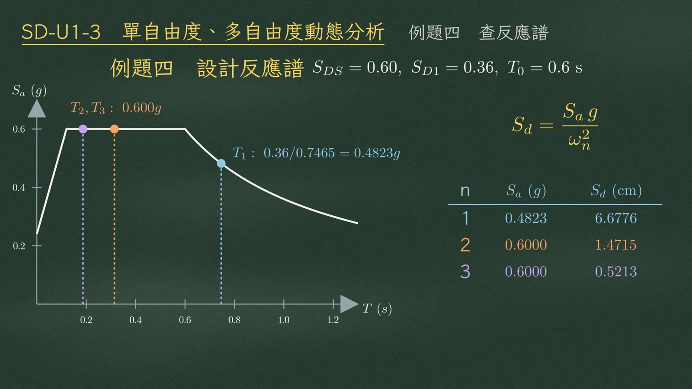
SDS = 0.60、SD1 = 0.36、T₀ = 0.6 s；三個週期落點影片 10:02
查設計反應譜：\(S_{DS}=0.6\)，\(S_{D1}=0.36\)，轉角週期 \(T_0=0.6\) s。
- \(T_1=0.746\) s 落在下降段：\(S_a=0.36/T=0.36/0.7465=0.4823g\)
- \(T_2\)、\(T_3\) 落在平台段：\(S_a=0.6g\)
再用擬譜關係：
$$S_d=\frac{S_a\,g}{\omega_n^2}$$
| n | \(S_a\) (g) | \(S_d\) (cm) |
|---|
| 1 | 0.4823 | 6.6776 |
| 2 | 0.6000 | 1.4715 |
| 3 | 0.6000 | 0.5213 |
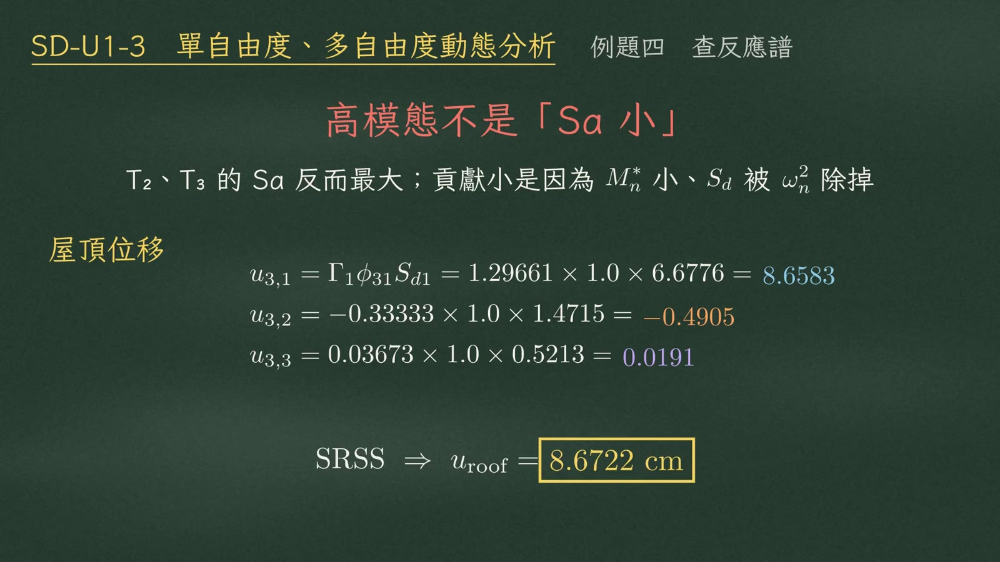
屋頂位移三模態與 SRSS影片 10:30
高模態不是「Sa 小」\(T_2\)、\(T_3\) 的 \(S_a\) 反而最大。它們貢獻小，是因為有效質量 \(M_n^*\) 小，而且 \(S_d\) 被 \(\omega_n^2\) 除掉。
$$\begin{aligned}
u_{3,1}&=\Gamma_1\phi_{31}S_{d1}=1.29661\times1.0\times6.6776=\color{#3d7fae}{8.6583}\\
u_{3,2}&=-0.33333\times1.0\times1.4715=\color{#d27a2c}{-0.4905}\\
u_{3,3}&=0.03673\times1.0\times0.5213=\color{#8a62c2}{0.0191}\\
\text{SRSS}\ \Rightarrow\ u_{\rm roof}&=8.6722\ \text{cm}
\end{aligned}$$
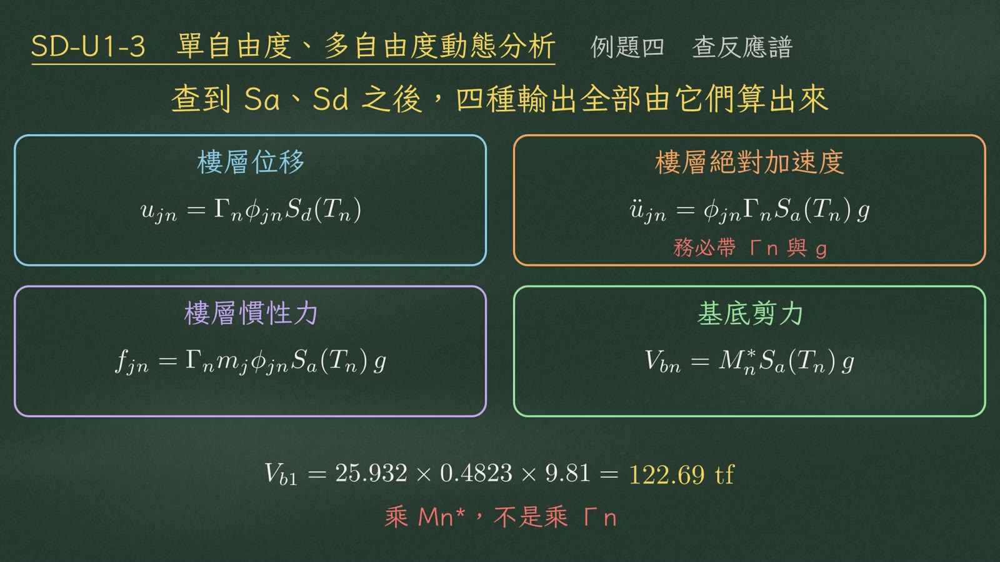
位移、絕對加速度、慣性力、基底剪力四種輸出影片 11:06
查到 \(S_a\)、\(S_d\) 之後，四種輸出全部由它們算出來：
| 輸出 | 公式 |
|---|
| 樓層位移 | \(u_{jn}=\Gamma_n\phi_{jn}S_d(T_n)\) |
| 樓層絕對加速度 | \(\ddot u_{jn}=\phi_{jn}\Gamma_nS_a(T_n)\,g\) |
| 樓層慣性力 | \(f_{jn}=\Gamma_nm_j\phi_{jn}S_a(T_n)\,g\) |
| 基底剪力 | \(V_{bn}=M_n^*S_a(T_n)\,g\) |
常見錯誤絕對加速度很多人漏掉 \(\Gamma\)，或忘了把 \(g\) 的倍數換成單位——務必帶 \(\Gamma_n\) 與 \(g\)。
基底剪力乘的是 \(M_n^*\)，不是 \(\Gamma\)。
$$V_{b1}=25.932\times0.4823\times9.81=122.69\ \text{tf}$$
11步驟四 模態組合
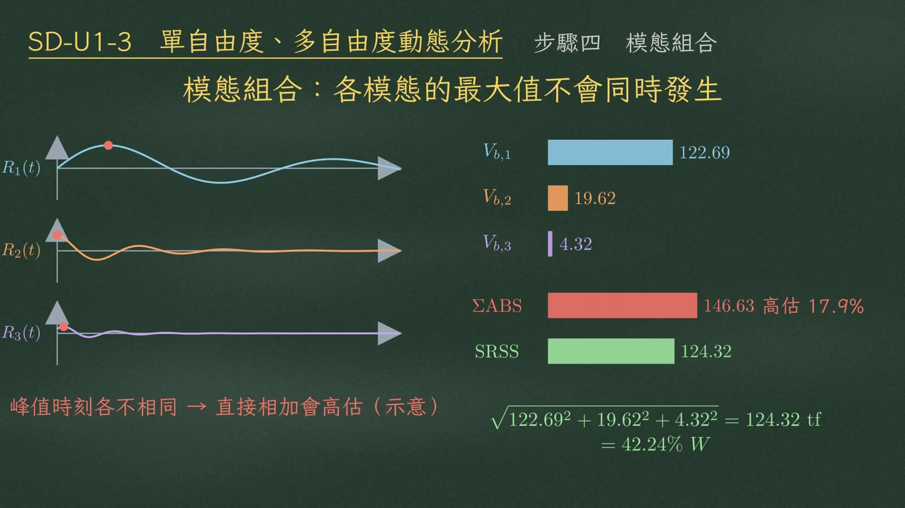
各模態峰值時刻不同（示意）→ 直接相加會高估影片 11:33
三個模態的峰值出現在不同時刻，不能直接相加。基底剪力三個模態：122.69、19.62、4.32 tf。
| 組合方式 | \(V_b\) (tf) | 說明 |
|---|
| ΣABS 直接相加 | 146.63 | 高估 17.9% |
| SRSS | 124.32 | \(\sqrt{122.69^2+19.62^2+4.32^2}\)，為總重的 42.24% |
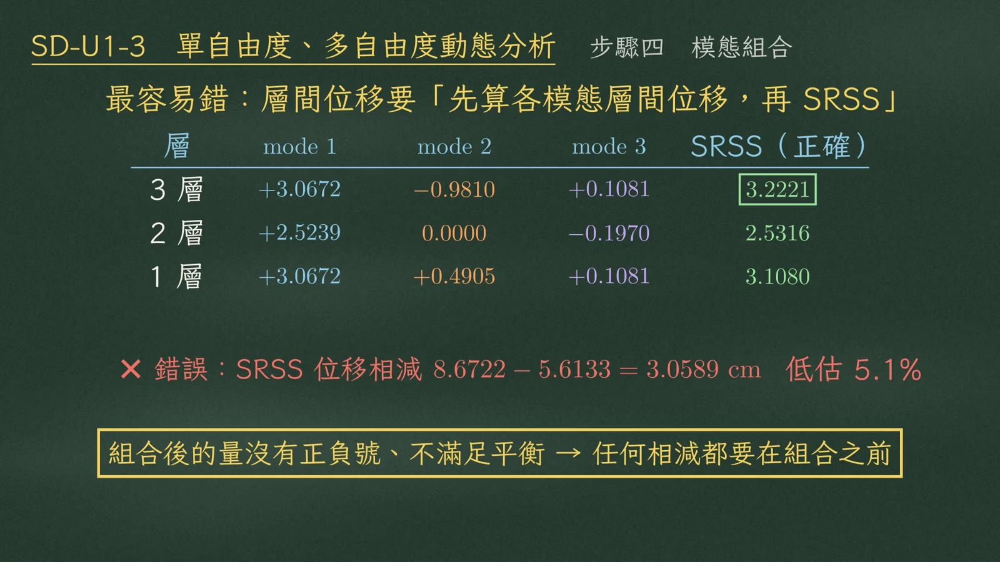
層間位移：先算各模態層間位移，再 SRSS影片 12:09
本單元最容易錯的一題：層間位移。正確做法是先算各模態的層間位移，再 SRSS。
| 層 | mode 1 | mode 2 | mode 3 | SRSS（正確） |
|---|
| 3 層 | +3.0672 | −0.9810 | +0.1081 | 3.2221 |
| 2 層 | +2.5239 | 0.0000 | −0.1970 | 2.5316 |
| 1 層 | +3.0672 | +0.4905 | +0.1081 | 3.1080 |
✗ 錯誤做法用 SRSS 之後的位移相減：\(8.6722-5.6133=3.0589\) cm，低估 5.1%。
重點組合後的量沒有正負號，也不滿足平衡——任何相減都要在組合之前做。
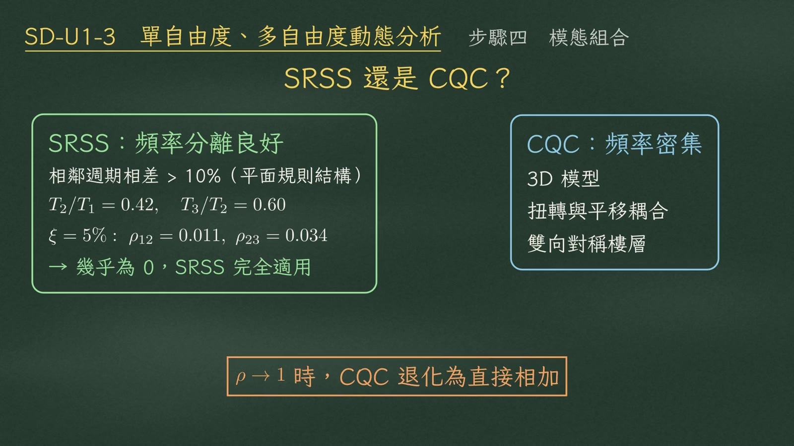
SRSS：頻率分離良好；CQC：頻率密集影片 12:43
| 方法 | 適用 |
|---|
| SRSS | 頻率分離良好：相鄰週期相差一成以上的平面規則結構 |
| CQC | 三維模型、扭轉與平移耦合造成頻率密集 |
本例 \(T_2/T_1=0.42\)、\(T_3/T_2=0.60\)，分得很開；取阻尼比 5%，相關係數 \(\rho_{12}=0.011\)、\(\rho_{23}=0.034\)，幾乎是零，SRSS 完全適用。
重點\(\rho\to1\) 時，CQC 退化成直接相加。
12例題五 Rayleigh 法
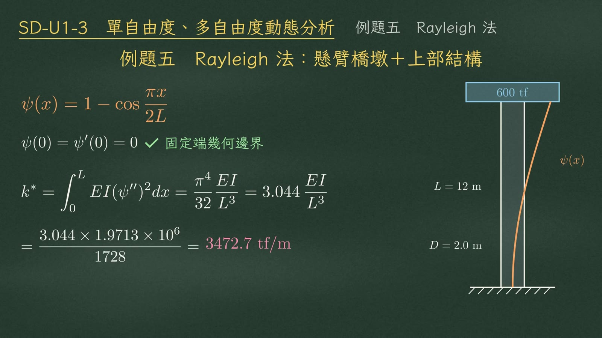
圓形懸臂橋墩 D = 2 m、L = 12 m、墩頂 600 tf影片 13:16
連續體用 Rayleigh 法。圓形懸臂橋墩，直徑 2 m、高 12 m，墩頂上部結構 600 tf。取形狀
$$\psi(x)=1-\cos\frac{\pi x}{2L},\qquad \psi(0)=\psi'(0)=0\ \checkmark$$
底部位移和轉角都是零，滿足幾何邊界條件。
$$k^*=\int_0^LEI(\psi'')^2dx=\frac{\pi^4}{32}\frac{EI}{L^3}=3.044\frac{EI}{L^3}$$
$$k^*=\frac{3.044\times1.9713\times10^6}{1728}=3472.7\ \text{tf/m}$$
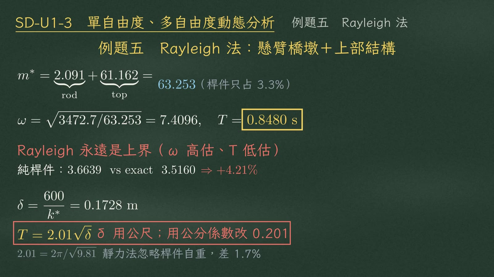
m*、ω、T；Rayleigh 上界；靜力位移法檢核影片 13:55
$$m^*=\underbrace{2.091}_{\text{rod}}+\underbrace{61.162}_{\text{top}}=63.253\quad(\text{桿件只占 }3.3\%)$$
$$\omega=\sqrt{3472.7/63.253}=7.4096,\qquad T=0.8480\ \text{s}$$
Rayleigh 永遠是上界（\(\omega\) 高估、\(T\) 低估）純桿件時這個形狀給 3.6639，精確解 3.5160，高估 4.21%。
靜力位移法檢核：
$$\delta=\frac{600}{k^*}=0.1728\ \text{m},\qquad T=2.01\sqrt\delta$$
單位陷阱\(\delta\) 一定要用公尺代入；用公分，係數要改成 0.201。（黑板：\(2.01=2\pi/\sqrt{9.81}\)）
13總結 四大防呆
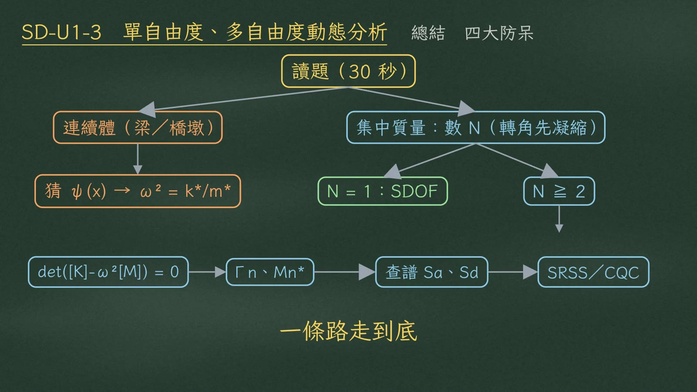
考場流程：連續體 or 集中質量 → 一條路走到底影片 14:20
讀題先花 30 秒判斷，是連續體還是集中質量：
- 連續體（梁／橋墩）：用 Rayleigh 法猜形狀 \(\psi(x)\) → \(\omega^2=k^*/m^*\)。
- 集中質量：先數自由度，無質量的轉角先靜態凝縮。
- \(N=1\)：走單擺。
- \(N\ge2\)：建矩陣 → 解特徵值 \(\det([K]-\omega^2[M])=0\) → 算 \(\Gamma_n\) 和 \(M_n^*\) → 查譜 → 組合（SRSS／CQC），一條路走到底。
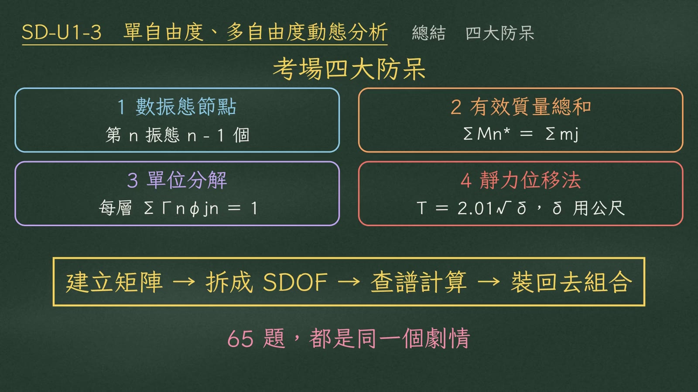
考場四大防呆影片 14:52
| 防呆 | 檢查內容 |
|---|
| ① 數振態節點 | 第 n 振態有 n − 1 個 |
| ② 有效質量總和 | \(\sum M_n^*=\sum m_j\) |
| ③ 單位分解 | 每層 \(\sum_n\Gamma_n\phi_{jn}=1\) |
| ④ 靜力位移法 | \(T=2.01\sqrt\delta\)，\(\delta\) 用公尺 |
建立矩陣 → 拆成單自由度 → 查譜計算 → 裝回去組合
65 題，都是同一個劇情